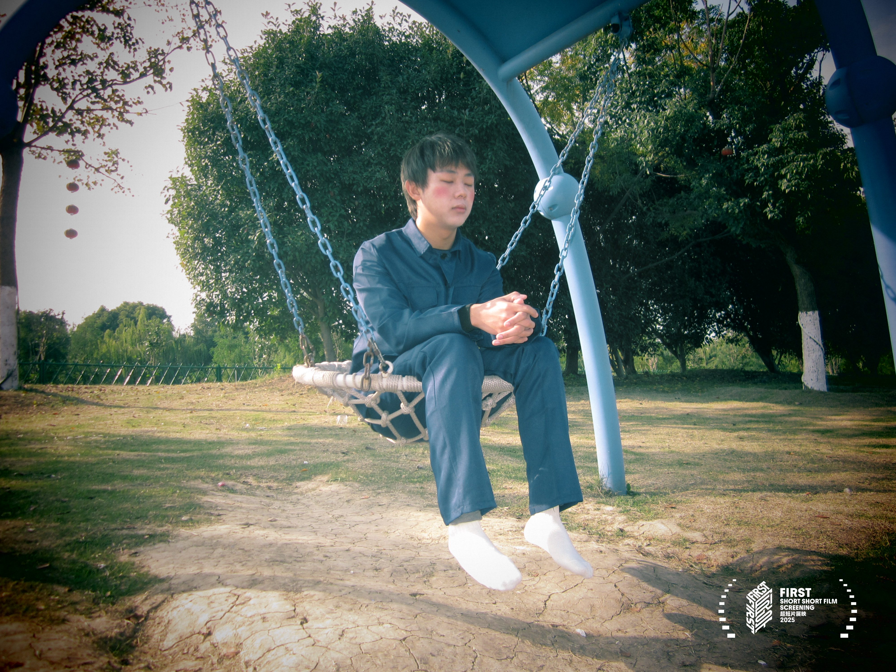
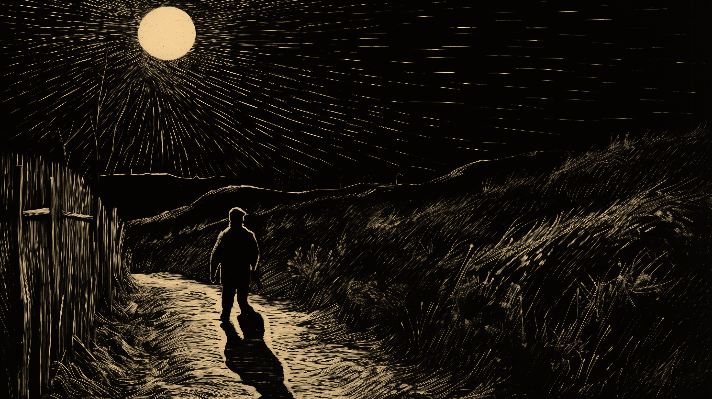
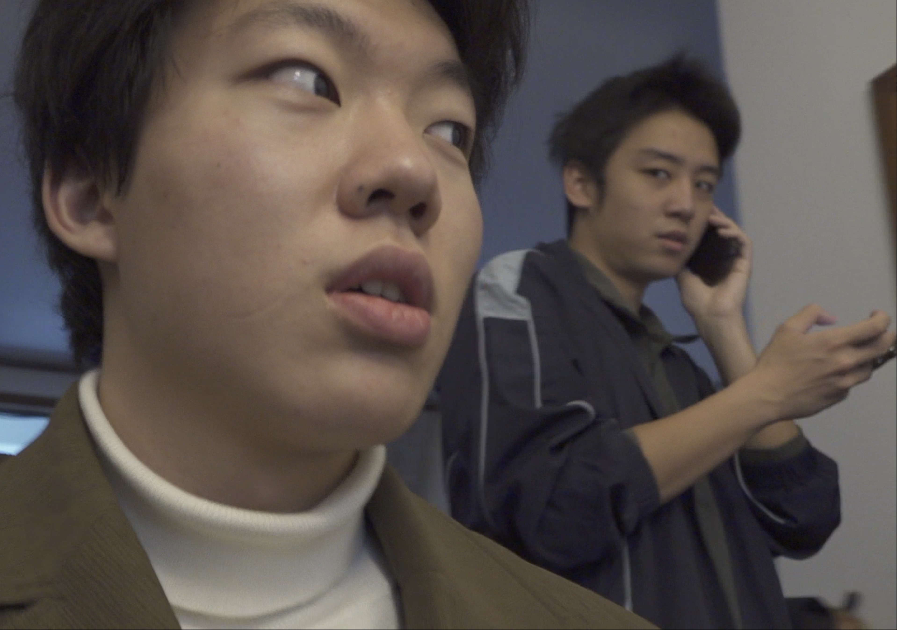
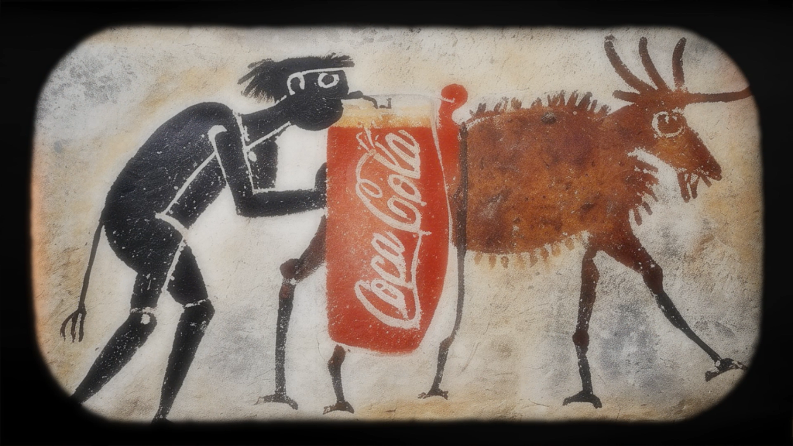
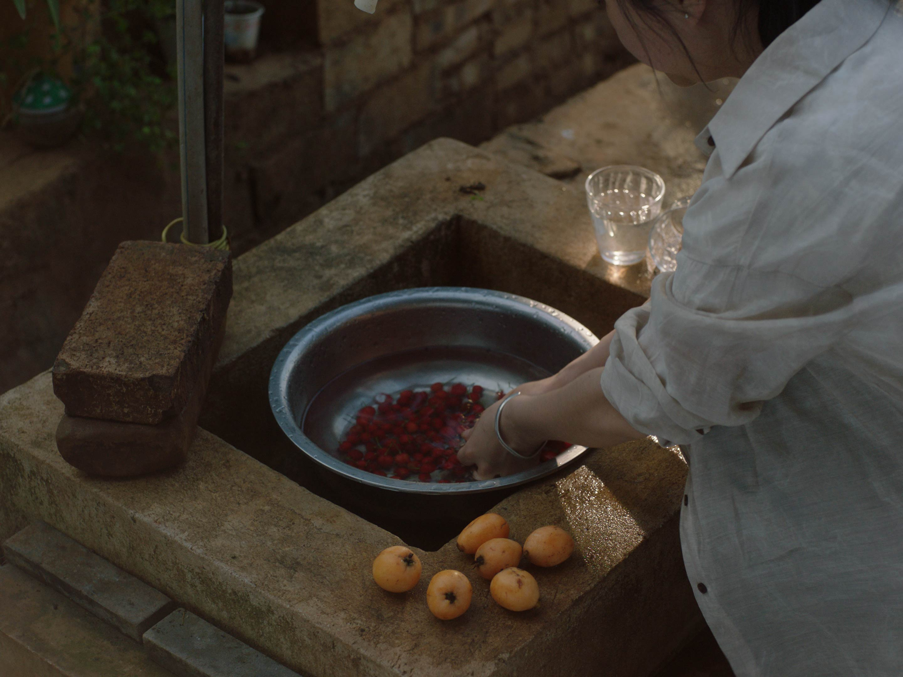
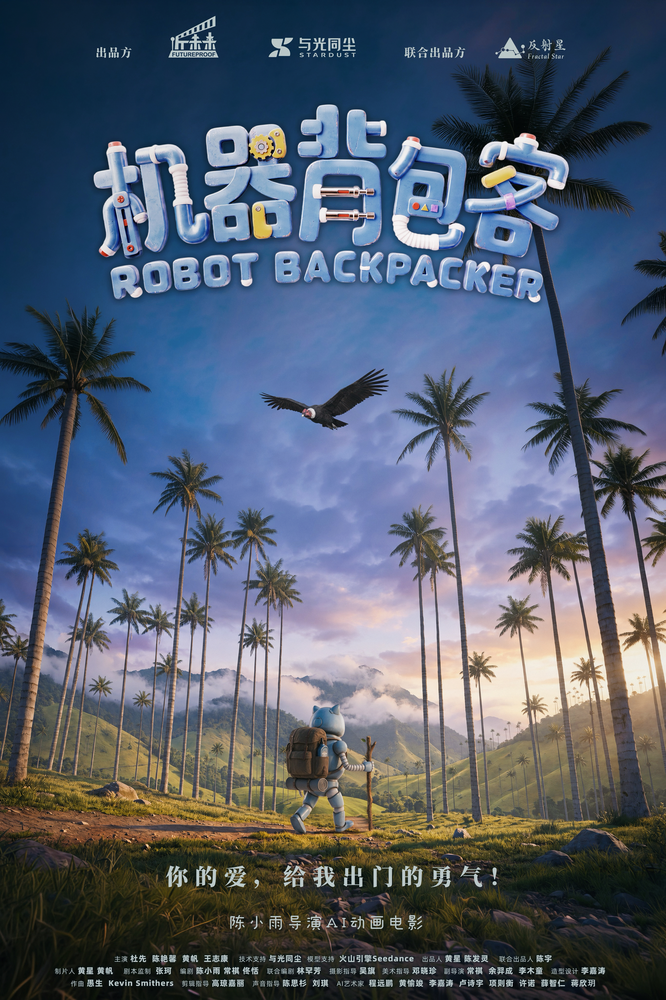

Skip to content
LI Mutong
李木童
Index +
LI Mutong — Selected films

Mom Tulip
好开心，你来了
Director, Screenwriter & Producer

A Diary of Madman
狂人日记
Director, Screenwriter & Producer

Tutor’s Diary
家教日记
Screenwriter / Production / Producer

Coca-Cola
可口可乐创意广告
Creator

A Silent Farewell
夏日午后
Editor

Robot Backpacker
机器背包客
Assistant Director
Close ×